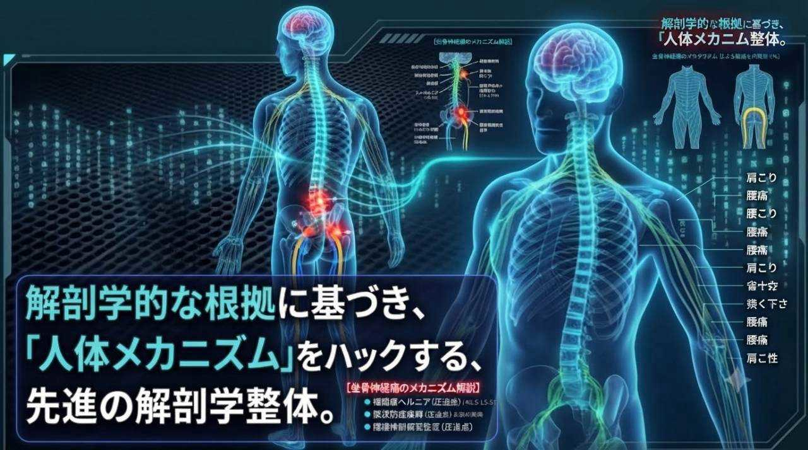

Interactive anatomy
人体メカニズムをハックする。
身体は、パーツの寄せ集めではありません。下の人体図から気になる部位を選んでみてください。関連する部位と、動きのつながりを表示します。
※人体図は部位の関係を学ぶための模式図です。診断用画像ではありません。
SELECTED BODY REGION
肩
腕を上げる動きでは、肩関節だけでなく肩甲骨や胸郭なども協調して働きます。
関連して見たい部位動きのポイント腕を上げるとき、肩甲骨は胸郭の上を動きます。肩だけに注目せず、複数の部位の動きを合わせて観察することが大切です。
これは一般的な身体のしくみの解説です。痛みの原因をこの図だけで判断することはできません。
人体図は身体のつながりを学ぶための模式図です。痛みの原因を診断するものではなく、表示内容だけで個別の状態を判断することはできません。
BODY KNOWLEDGE
身体のことを知る
身体を知ると、自分の身体がもっと分かる。部位ごとの構造や働きを知り、首・肩・背中・腕のような全身のつながりにも目を向けてみましょう。
症状から探す入口に加えて、気になる部位から身体のしくみを学べるコーナーです。まずは肩・肩甲骨の解説からご覧ください。
01 / FIRST GUIDE
肩・肩甲骨
構造・働き・首や背中、腕とのつながり
構造と機能の解説を見る ↗ 02 / NECK首
頭を支え、胸郭や肩と協調する部位
人体図で位置を見る ↗ 03 / CHEST & BACK胸・背中
胸郭、背骨、肩甲骨の動き
人体図で位置を見る ↗ 04 / LOW BACK & PELVIS腰・骨盤
体幹と股関節をつなぐ動き
人体図で位置を見る ↗ 05 / HIP股関節
立つ、歩く、座る動作に関わる関節
人体図で位置を見る ↗ 06 / KNEE膝
股関節と足首の間で脚の動きを支える
人体図で位置を見る ↗ 07 / FOOT足・足裏
接地や歩行に関わる足部の働き
人体図で位置を見る ↗08 / HEAD & FACE
頭・顔
頭部の構造や首とのつながりを解説予定
記事を準備中09 / ARM & HAND
腕・手
肩から手までの関節や動きのつながりを解説予定
記事を準備中10 / THIGH
太もも
股関節や膝と連動する太ももの働きを解説予定
記事を準備中11 / CALF
ふくらはぎ
足首や歩行との関係を解説予定
記事を準備中記事を作る順番
- 肩・肩甲骨（見本ページ）
- 首 → 胸・背中 → 腰・骨盤
- 股関節 → 膝 → 足・足裏
- 頭・顔 → 腕・手 → 太もも → ふくらはぎ
このコーナーは一般的な身体の構造と機能を紹介するものです。症状の原因を判断したり、診断したりするものではありません。